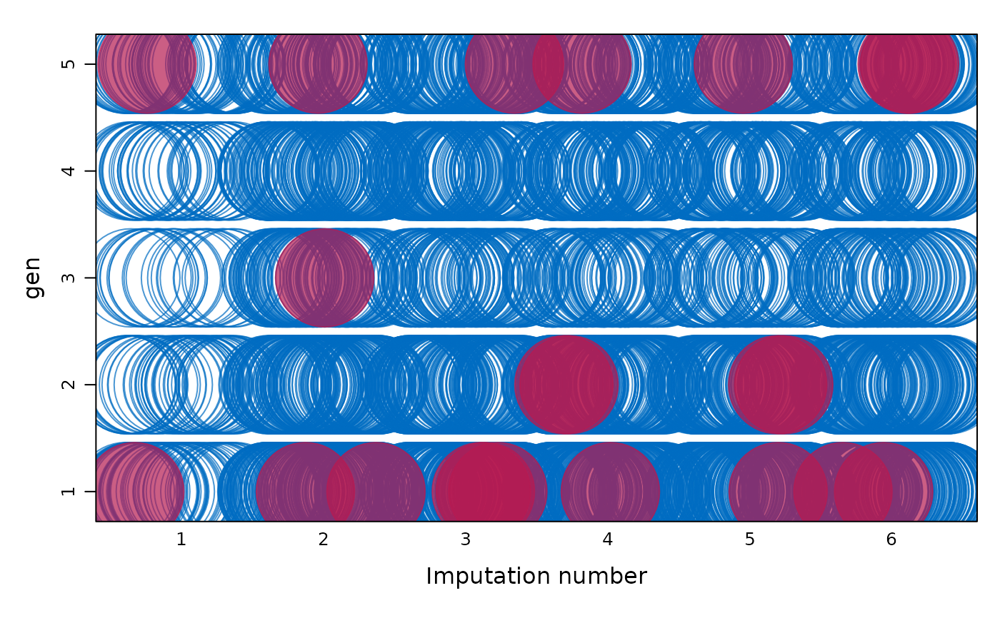

Plotting methods for imputed data using lattice.
stripplot produces one-dimensional
scatterplots. The function
automatically separates the observed and imputed data. The
functions extend the usual features of lattice.
Usage
# S3 method for mids
stripplot(
x,
data,
na.groups = NULL,
groups = NULL,
as.table = TRUE,
theme = mice.theme(),
allow.multiple = TRUE,
outer = TRUE,
drop.unused.levels = lattice::lattice.getOption("drop.unused.levels"),
panel = lattice::lattice.getOption("panel.stripplot"),
default.prepanel = lattice::lattice.getOption("prepanel.default.stripplot"),
jitter.data = TRUE,
horizontal = FALSE,
...,
subscripts = TRUE,
subset = TRUE
)Arguments
- x
A
midsobject, typically created bymice()ormice.mids().- data
Formula that selects the data to be plotted. This argument follows the lattice rules for formulas, describing the primary variables (used for the per-panel display) and the optional conditioning variables (which define the subsets plotted in different panels) to be used in the plot.
The formula is evaluated on the complete data set in the
longform. Legal variable names for the formula includenames(x$data)plus the two administrative factors.impand.id.Extended formula interface: The primary variable terms (both the LHS
yand RHSx) may consist of multiple terms separated by a ‘+’ sign, e.g.,y1 + y2 ~ x | a * b. This formula would be taken to mean that the user wants to plot bothy1 ~ x | a * bandy2 ~ x | a * b, but with they1 ~ xandy2 ~ xin separate panels. This behavior differs from standard lattice. Only combine terms of the same type, i.e. only factors or only numerical variables. Mixing numerical and categorical data occasionally produces odds labeling of vertical axis.For convenience, in
stripplot()andbwplotthe formulay~.impmay be abbreviated asy. This applies only to a singley, and does not (yet) work fory1+y2~.imp.- na.groups
An expression evaluating to a logical vector indicating which two groups are distinguished (e.g. using different colors) in the display. The environment in which this expression is evaluated in the response indicator
is.na(x$data).The default
na.group = NULLcontrasts the observed and missing data in the LHSyvariable of the display, i.e. groups created byis.na(y). The expressionycreates the groups according tois.na(y). The expressiony1 & y2creates groups byis.na(y1) & is.na(y2), andy1 | y2creates groups asis.na(y1) | is.na(y2), and so on.- groups
This is the usual
groupsarguments in lattice. It differs fromna.groupsbecause it evaluates in the completed datadata.frame(complete(x, "long", inc=TRUE))(as usual), whereasna.groupsevaluates in the response indicator. Seexyplotfor more details. When bothna.groupsandgroupsare specified,na.groupstakes precedence, andgroupsis ignored.- as.table
See
xyplot.- theme
A named list containing the graphical parameters. The default function
mice.themeproduces a short list of default colors, line width, and so on. The extensive list may be obtained fromtrellis.par.get(). Global graphical parameters likecolorcexin high-level calls are still honored, so first experiment with the global parameters. Many setting consists of a pair. For example,mice.themedefines two symbol colors. The first is for the observed data, the second for the imputed data. The theme settings only exist during the call, and do not affect the trellis graphical parameters.- allow.multiple
See
xyplot.- outer
See
xyplot.- drop.unused.levels
See
xyplot.- panel
See
xyplot.- default.prepanel
See
xyplot.- jitter.data
See
panel.xyplot.- horizontal
See
xyplot.- ...
Further arguments, usually not directly processed by the high-level functions documented here, but instead passed on to other functions.
- subscripts
See
xyplot.- subset
See
xyplot.
Value
The high-level functions documented here, as well as other high-level
Lattice functions, return an object of class "trellis". The
update method can be used to
subsequently update components of the object, and the
print method (usually called by default)
will plot it on an appropriate plotting device.
Details
The argument na.groups may be used to specify (combinations of)
missingness in any of the variables. The argument groups can be used
to specify groups based on the variable values themselves. Only one of both
may be active at the same time. When both are specified, na.groups
takes precedence over groups.
Use the subset and na.groups together to plots parts of the
data. For example, select the first imputed data set by by
subset=.imp==1.
Graphical parameters like col, pch and cex can be
specified in the arguments list to alter the plotting symbols. If
length(col)==2, the color specification to define the observed and
missing groups. col[1] is the color of the 'observed' data,
col[2] is the color of the missing or imputed data. A convenient color
choice is col=mdc(1:2), a transparent blue color for the observed
data, and a transparent red color for the imputed data. A good choice is
col=mdc(1:2), pch=20, cex=1.5. These choices can be set for the
duration of the session by running mice.theme().
Note
The first two arguments (x and data) are reversed
compared to the standard Trellis syntax implemented in lattice. This
reversal was necessary in order to benefit from automatic method dispatch.
In mice the argument x is always a mids object, whereas
in lattice the argument x is always a formula.
In mice the argument data is always a formula object, whereas in
lattice the argument data is usually a data frame.
All other arguments have identical interpretation.
References
Sarkar, Deepayan (2008) Lattice: Multivariate Data Visualization with R, Springer.
van Buuren S and Groothuis-Oudshoorn K (2011). mice: Multivariate
Imputation by Chained Equations in R. Journal of Statistical
Software, 45(3), 1-67. doi:10.18637/jss.v045.i03
See also
mice, xyplot, densityplot,
bwplot, lattice for an overview of the
package, as well as stripplot,
panel.stripplot,
print.trellis,
trellis.par.set
Examples
imp <- mice(boys, maxit = 1)
#>
#> iter imp variable
#> 1 1 hgt wgt bmi hc gen phb tv reg
#> 1 2 hgt wgt bmi hc gen phb tv reg
#> 1 3 hgt wgt bmi hc gen phb tv reg
#> 1 4 hgt wgt bmi hc gen phb tv reg
#> 1 5 hgt wgt bmi hc gen phb tv reg
### stripplot, all numerical variables
if (FALSE) {
stripplot(imp)
}
### same, but with improved display
if (FALSE) {
stripplot(imp, col = c("grey", mdc(2)), pch = c(1, 20))
}
### distribution per imputation of height, weight and bmi
### labeled by their own missingness
if (FALSE) {
stripplot(imp, hgt + wgt + bmi ~ .imp,
cex = c(2, 4), pch = c(1, 20), jitter = FALSE,
layout = c(3, 1)
)
}
### same, but labeled with the missingness of wgt (just four cases)
if (FALSE) {
stripplot(imp, hgt + wgt + bmi ~ .imp,
na = wgt, cex = c(2, 4), pch = c(1, 20), jitter = FALSE,
layout = c(3, 1)
)
}
### distribution of age and height, labeled by missingness in height
### most height values are missing for those around
### the age of two years
### some additional missings occur in region WEST
if (FALSE) {
stripplot(imp, age + hgt ~ .imp | reg, hgt,
col = c(grDevices::hcl(0, 0, 40, 0.2), mdc(2)), pch = c(1, 20)
)
}
### heavily jitted relation between two categorical variables
### labeled by missingness of gen
### aggregated over all imputed data sets
if (FALSE) {
stripplot(imp, gen ~ phb, factor = 2, cex = c(8, 1), hor = TRUE)
}
### circle fun
stripplot(imp, gen ~ .imp,
na = wgt, factor = 2, cex = c(8.6),
hor = FALSE, outer = TRUE, scales = "free", pch = c(1, 19)
)
